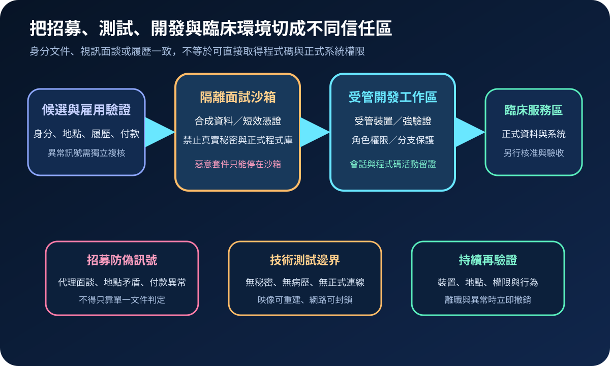
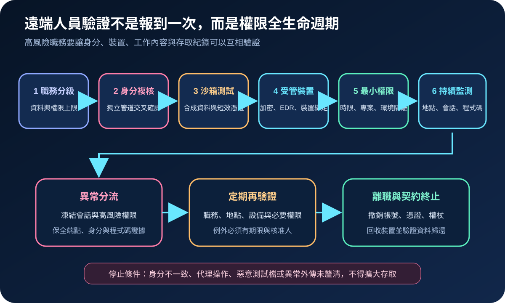
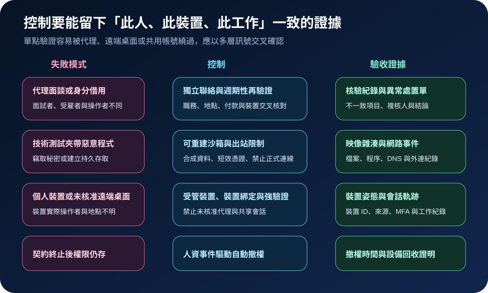

醫療資安國際觀察 · 2026-09-21
醫療遠端技術人員如何避免身分代雇與惡意面試：從隔離沙箱到持續驗證
作者：Dr. William｜醫療資訊與資安治理實務工作者
醫療機構聘用遠端開發、資料與維運人員時，風險可能從招募階段開始。攻擊者可利用代理面談、虛假身分或惡意技術測試取得裝置、程式碼與憑證，因此核驗範圍必須跨越人資、資訊、資安及用人單位。
名詞解釋：身分核驗不等於持續可信
身分代雇是面試、簽約與實際工作者並非同一人；代理操作則由第三方透過遠端桌面或共用裝置完成工作；隔離沙箱是可重建、無正式秘密與病歷資料的技術測試環境；持續驗證會把人員、受管裝置、來源位置、工作內容與權限活動持續比對，而非只在報到時查驗一次。
國際現況與適用邊界
英國 NCSC、FBI 與荷蘭 AIVD 於 2026 年 9 月 18 日發布聯合警示，說明 WaterPlum 使用職缺接觸、技術面試及開發工具作為惡意程式投遞途徑，並觀察其招募型基礎設施與 BlueNoroff 等活動存在技術連結。警示要求企業避免在正式環境執行候選人提供的程式碼，並留意受密碼保護壓縮檔、關閉防毒或繞過安全控制等要求。
FBI 於 2024 年 5 月發布北韓遠端 IT 人員風險警示，指出虛假或遭竊身分、代理面談、公司設備轉寄、未核准遠端存取及第三方招募等模式。這些通報描述特定國家威脅與美國法律風險，不是台灣醫療機構的法定招募規則；台灣院所可依資料敏感度、臨床影響與職務權限，轉化為身分、裝置及存取驗收條件。
適用邊界：異地工作、跨國付款或身分資料差異不應單獨被視為惡意證據。處置須採多項訊號交叉核對，並遵循台灣勞動、個資、契約及內部調查程序。
規劃：把招募流程納入資安控制面
職務清冊先標示可接觸的病歷、研究資料、程式庫、雲端與正式系統。人資負責身分與契約一致性；用人主管確認技能與工作產出；資訊團隊交付受管裝置；資安團隊設計沙箱、日誌與異常分流。驗收指標包括高風險職務核驗率、面試沙箱覆蓋率、受管裝置使用率、短效權限比例、異常調查時間及離職撤權時間。

實作：從面試沙箱到離職撤權
- 隔離測試：技術面試使用可重建環境、合成資料與短效憑證，封鎖正式程式庫及不必要外連。
- 交叉核驗：透過獨立聯絡管道核對身分、履歷、工作地點、付款對象與設備收件資訊；異常交由不同人員複核。
- 受管工作區：正式工作僅允許受管裝置、抗釣魚驗證及裝置綁定，禁止未核准遠端桌面與共享會話。
- 最小權限：依專案、環境及期限授權，程式碼合併、秘密讀取與正式部署分離核准。
- 異常與退場：發現代理操作、惡意檔案或異常外傳時先凍結高風險權限並保全證據；契約終止同步撤銷帳號、憑證、權杖並回收裝置。
風險：過度查核也會造成新的治理問題
只依視訊外觀、口音或地理位置判定容易產生誤判與歧視；過度收集候選人資料則增加個資風險。控制應限於職務必要性，明定保存期限、查閱角色及申訴流程。NIST SP 800-61 Rev. 3 可作為事件準備、偵測、回應與復原流程參考，但不取代台灣法規、勞動程序或個案法律判斷。

可執行清單
- 高風險遠端職務是否先定義資料、系統與權限上限？
- 候選人提供的程式碼是否只在隔離沙箱執行？
- 核驗是否使用獨立管道並由不同角色複核異常？
- 正式工作是否限制受管裝置、強驗證與短效權限？
- 能否把裝置、來源、會話與程式碼活動關聯到同一工作者？
- 離職或事件發生時，帳號、憑證、權杖及設備能否同步撤銷與回收？
來源
- FBI／NCSC／AIVD｜WaterPlum Targets Software Developers with Sophisticated Malware（發布：2026-09-18；查閱：2026-09-21）
- FBI｜Democratic People's Republic of Korea Leverages U.S.-Based Individuals to Defraud U.S. Businesses and Generate Revenue（發布：2024-05-16；查閱：2026-09-21）
- NIST｜SP 800-61 Rev. 3: Incident Response Recommendations and Considerations（發布：2025-04；查閱：2026-09-21）
內容說明
本文依健康台灣深耕計畫相關治理內容整理，並參考 NCSC、FBI、AIVD 與 NIST 公開資料，提出台灣醫療機構可採用的遠端技術人員核驗、隔離測試、受管裝置與權限生命週期方法；不取代主管機關公告、法律意見、勞動程序、事件鑑識或個案風險判斷。